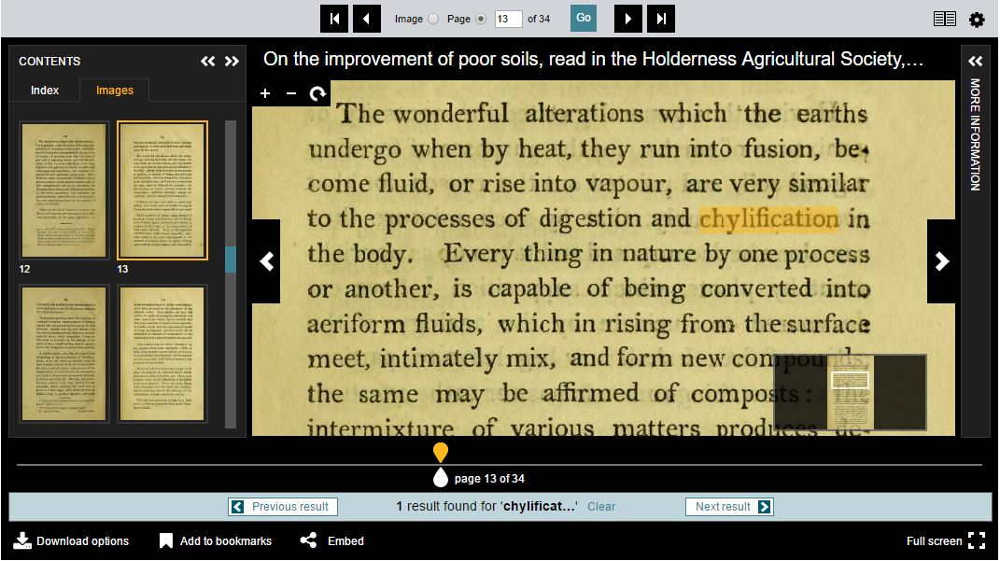
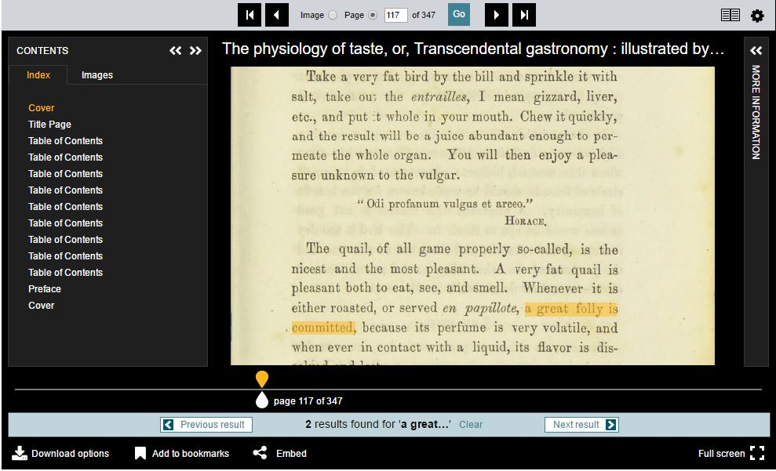
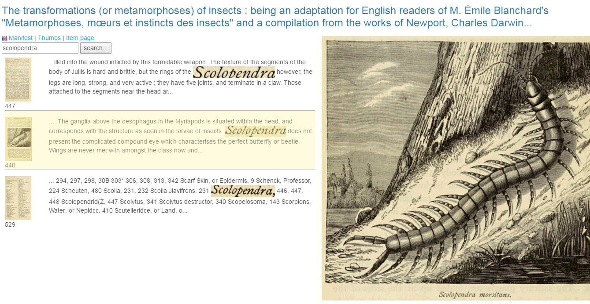
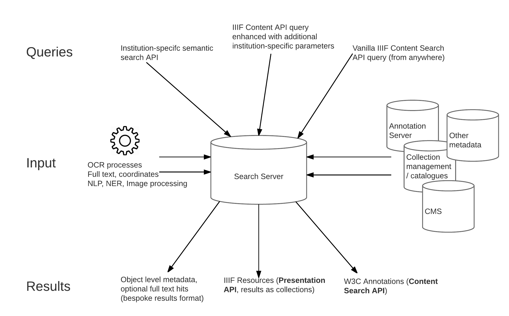

Tom Crane,
Digirati, May 2017
This work is licensed under a
Creative Commons Attribution-NonCommercial-ShareAlike 4.0 International License
What do we mean when we talk about search?
Leaving aside IIIF for a moment, here are some scenarios that fall under the general description search. You are the institution providing search capability, I’m the user:
These are different search scenarios with very different user experiences. What makes a search result in these different scenarios?
Firstly, how does the result get to be a result? What contributed to its inclusion in the returned hits?
Secondly, what do the search results look like?
When I find an object, I might be able to look at some metadata about it, that uses your view of the world to describe it to me. This might be the end of the road for a search - I get to a catalogue record page, but I can’t see any more of the thing itself. But maybe you have some content of the thing available. If it’s a book there might be a transcript of its full text. If I’m lucky, you have digitised the object, made it available as IIIF and I can look at it in a viewer. If I included a free text term in my search query, you might be able to give me contextual hits for those terms, and maybe even an image of the part of the page that generated the hit. If what you and others have said about the object (apart from in its descriptive metadata) is indexed and contributes to the hit, you could include extracts from additional text sources in the results too.
You can only give me one object back for my descriptive facets, but you could give me many results for the same object for free text matches, and you might group them as child hits before ranking the objects. If I’m the user in scenarios 7 and 8, who has already found the object and is interacting with it, the results can only be about the content of this one object, and they need to help me navigate around the object and display its associated transcription, commentary and other content.

What about users who match scenario 6? They are searching within a single item or a particular constrained set of already-chosen items (a single journal, a single subject heading, a single author’s works, some other collection defined by means unspecified). Those users' API interactions are all about the content - the text, images and other resources - rather than the item-level description.
Scenarios 1 and 2 are different from scenarios 6, 7 and 8.
1 and 2 are closely aligned to the institution or domain specific metadata scheme the content is organised by; this model is the source of facets or constraints on the results. The user is searching through the lens of an institution's cataloguing and classification practices.
6, 7 and 8 are not about the model. The model may have helped the user assemble the resources or find them in the first place, but at this stage the classification of the object is not playing a part in search results.
The first part of this series explored the IIIF Presentation API’s independence of any particular descriptive metadata scheme, and how that enables interoperability by confining the IIIF model to presentation metadata. The IIIF Content Search API does the same for searching the content of those interoperable IIIF resources. It is not about finding the resources in the first place, which requires an organising scheme or interpretation of descriptive semantics, and/or full text at scale. That’s not to say the IIIF community isn’t interested in that problem - there is more on Discovery later - but it’s a different problem, with different solutions in terms of APIs and search interactions. There is a IIIF published specification that describes the query syntax and response format for content search, but not one that specifies query parameters for discovering objects. Not yet, anyway.
The Presentation API provides a framework (via collections, manifests and canvases) on which to hang content. Content is associated with IIIF Resources through the mechanism of annotation - Open Annotation in the current IIIF specification, and the W3C Web Annotation Data Model in the next version (the two are very similar, the W3C model is the successor of Open Annotation and is now a W3C Technical Recommendation, the same kind of standard as HTML or CSS). All content is associated with the IIIF scaffolding in this way - the images, video and audio that you look at or listen to, but also all the text content - transcriptions, translations, commentary, descriptions, datasets - and other types of annotation like tags, bookmarks or anything else that can possibly be associated with the digitised object.
If you want to search the content of one or more digitised resources, you need to search for annotations, because that's how the content is associated with the representation of the physical object. You can't do that without IIIF (or something that does the same job) because without IIIF there's no association of content with physical space.
Annotations are a standardised mechanism for linking web resources, and we can standardise a way to search them (the query syntax) and return the results in a IIIF context (the response format). The IIIF Content Search API doesn’t return descriptions of objects - certainly not any semantic description, but not IIIF Manifests or Collections either. It returns content, therefore it returns annotations.
In some circumstances, a IIIF Content Search API service might generate those annotations on the fly. They don’t have to exist as annotations before the moment of delivery. This approach has been used in several implementations to return full text search results that target the exact word or phrase in the text and allow the client application to highlight it.
For other content, the results might already exist natively as annotations in an annotation server (transcripts, commentary, editorial content). Or the results could be converted to annotation format for the response, so that the content becomes interoperable. The content might live natively in a content management system or some other database. If a client can consume and display annotation content according to the standards, it can also consume and display IIIF Content Search results, because those results are lists of annotations.
However, that’s not the end of the story. The Content Search specification adds some extra information to the returned annotation list, to turn a plain annotation list into hits - search results. Machine consumers that just expect annotations can consume the response as a plain annotation list, but clients that understand it as IIIF Content Search results can use the extra information given by hits. In the following example, two annotations are returned (to draw the two boxes) but the results coalesce them into a single hit:

View the API response that generates this hit
Scenario 6 (where the researcher is very familiar with the small set of content they are searching) is typical of someone working with a known set of content over an extended period of time. They are interested in the text content and images of a set of digitised objects, and perform multiple complex queries over them, searching for occurrences of text in images, runs of text with common phrases, or other features. Often the immediate annotation search results are not the end of the story, and further analysis will happen outside of any interaction with the institution’s APIs.
Many institutions providing IIIF materials have users with requirements like scenario 6. In the past, the best users could hope for would be that the institution offers full text for download, with text metadata to provide greater layout detail, in formats like METS-ALTO, hOCR or TEI depending on the nature of the material. This would allow offline analysis, but no consistency of interaction experience or reuse of common tools. The researcher’s toolset would need to be adapted to each institution and new analysis code written each time. It’s impossible to anticipate every research use case and almost certainly a waste of effort to try to meet everyone's needs in your own APIs - people are always going to want to do their own analysis. But a huge amount of effort can be avoided by meeting these needs part of the way, via the IIIF Content Search API, which standardises the format of search responses from content. Common search use cases across multiple institutions led to the IIIF Content Search API in the first place, and continue to generate new requirements for the specification. The IIIF community currently has a Text Granularity Technical Specification Group whose remit is to finesse the Search API around these kinds of queries to meet commonly identified API use cases, for example allowing the query to specify whether the results should be at the word, line, sentence, paragraph or page level. Widespread adoption of IIIF in this context will avoid the need to process the text formats mentioned above.
Scenarios 9-12 are what IIIF with Content Search could help bring standardised, interoperable approaches to. Many projects or research activities are about text from images, or text and images together, or image similarity, or text similarity, in various combinations. If the source material is available via the Presentation API, the pixels available via the Image API, and text available as annotations or transformable to annotations, then shared tools and techniques can be brought to bear on the content and structure in combination.

The Content Search API offers a simple set of query parameters (from the specification ):
| Parameter | Definition |
|---|---|
| q | A space separated list of search terms. The search terms may be either words (to search for within textual bodies) or URIs (to search identities of annotation body resources). The semantics of multiple, space separated terms is server implementation dependent. |
| motivation | A space separated list of motivation terms. If multiple motivations are supplied, an annotation matches the search if any of the motivations are present. |
| date | A space separated list of date ranges. An annotation matches if the date on which it was created falls within any of the supplied date ranges. |
| user | A space separated list of URIs that are the identities of users. If multiple users are supplied, an annotation matches the search if any of the users created the annotation. |
Common values for the motivation parameter are painting (indicating that they can be rendered on the canvas, such as transcriptions), commenting, linking, identifying, describing, and tagging.
None of the parameters are mandatory. They allow for searches such as:
Implementers are free to add additional parameters to the search, and new parameters may get added to later versions of the specification (e.g., the recommendations of the Text Granularity Working Group).
How do client applications find out about search services? A IIIF resource can provide a search service that when queried using the above syntax, will return annotation results. Typical use cases are for searching within a single object, but a IIIF Collection can also provide a search service for its content, and there is no limit to what a IIIF Collection could include. This means you could provide a search service for any collection, even dynamically created ones, or collections that users have assembled themselves.
So far this seems to point to a complete separation of concerns between IIIF Content Search, and institutional semantic search via descriptive metadata and specific models of the objects. To meet all these use cases, you need two different kinds of search API, because there are two quite different kinds of service being offered. But this separation doesn’t have to be absolute, and there is great potential in combining them for some scenarios. You could provide IIIF content search for interoperable operations on content, alongside a semantic search, as different APIs served from the same data store. And then you can start to mix them together.
A search based on descriptive metadata, on your model (and therefore nothing to do with IIIF Content Search query syntax), could optionally return IIIF resources as well as your model’s domain objects for your items, depending on what people want to do with the results. If I have constrained a descriptive metadata search to return only digitised items, I could choose to get those results as a IIIF collection, which is portable and reusable elsewhere. Additional full text hits could be returned as annotations. This is not IIIF Content Search - it’s just offering IIIF Presentation API resources as results.
Similarly, the IIIF Content Search API is open for extension. You can add additional query parameters that mix in your model and its facets to the search. You could offer a content search service that can be constrained by model-specific terms, and use those extensions in your own applications.
Search becomes a different thing altogether when it’s about the text content of objects with knowledge of the images of that text. The same single search implementation and results format won’t meet all these needs. But that doesn’t mean the two mechanisms of search couldn’t be delivered by the same infrastructure, as they both make use of the same content in different ways.

The Universe of IIIF resources has billions of Image API services and millions of Presentation API manifests. How do people find them? How do I find all the digitised versions of Euclid's Elements available as IIIF, or as many early texts of King Lear as I can?
The IIIF Content Search API is not the answer, although it could help if implemented at scale as a "search within" service on a large collection. But that approach is unlikely to be very useful for typical resource discovery activities, which are more like scenarios 1 and 2 but at a level above that of individual institutions. A user narrowing in on objects of interest needs facets from descriptive metadata. Search engines don't know about manifests either. There is no filter in Google to restrict results to objects that you can view in IIIF clients.
In order to find all the IIIF versions of the Elements, we need to visit a IIIF search engine or aggregator. This might be a large general purpose aggregator like Europeana, or it might be a portal or registry tended by a particular community of interest. The IIIF Discovery Technical Specification Group aims to create specifications that allow aggregators to harvest and index existing resources, and people to search them, in an interoperable way. This must require descriptive metadata to some extent, which IIIF does not provide.
Can we agree on just enough linked descriptive metadata to make this work?
IIIF provides a mechanism for linking to external machine-readable descriptions of the object:
seeAlso
A link to a machine readable document that semantically describes the resource with the seeAlso property, such as an XML or RDF description. This document could be used for search and discovery or inferencing purposes, or just to provide
a longer description of the resource. The profile and format properties of the document should be given to help the client to make appropriate use of the document.
If everyone provides rich descriptive metadata at the other end of one of more seeAlso links from their IIIF resources, it doesn't necesarily help an aggregator index the content, because that aggregator needs to understand the semantics of the linked description. The linked description could be anything. It could be a MARC record, or a schema.org description, or some bespoke model. A search engine or aggregator looking to index the description of the object to provide facets for searching can only do this if it understands the terms, so it can offer them as facets for searching on.
This suggests that everyone has to agree on how their objects are described, in at least one of the linked seeAlso resources. You can have more than one linked seeAlso, and a client can determine from service profiles what each of them is. This allows you to publish a rich description of the object conforming to your model of the world, alongside a reduced description suitable for aggregators. If you can provide a schema.org description of the object on a web page for search engines, you can link to a schema.org description for IIIF aggregators. Both are simple representations for interopeable discovery.
Perhaps what will emerge is a small number of profiles, that each use a simple schema.org or Dublin Core set of terms to describe the objects specifically for IIIF aggregators. One profile for printed books, one profile for manuscripts, one profile for Newspapers and periodicals, one profile for artworks and so on. The work of schema.org community groups such as bib.schema.org indicates a possible approach that communities of interest could adopt to produce a simple descriptive schema in their domains.
More Digirati updates